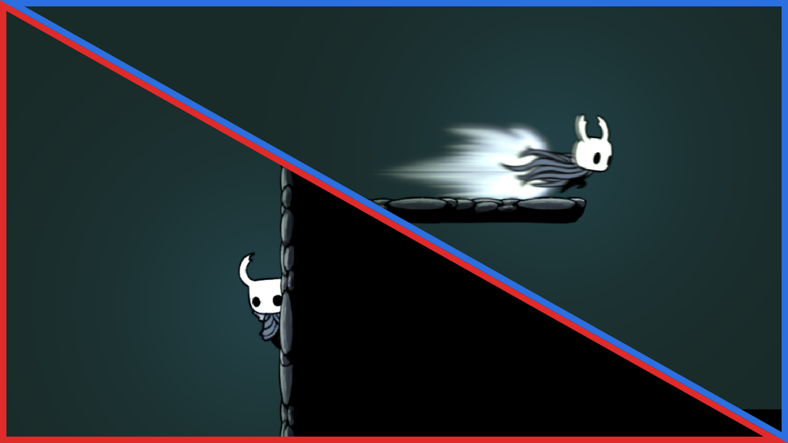
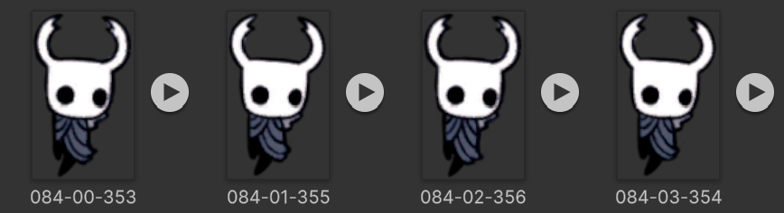
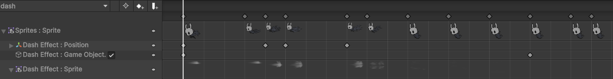
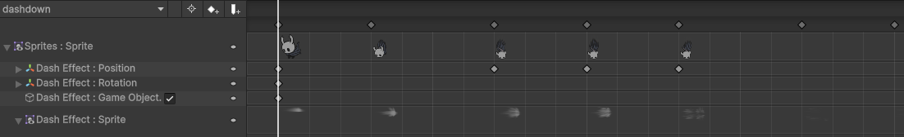

空洞騎士重現 - Dash & Climb

這次來點簡單的任務，把小騎士的移動方式加上衝刺 (Dash) & 攀牆 (Climb)，分別屬於水平與垂直移動的新狀態，透過先前打造的狀態機可以輕鬆達成 ~~~
Sprites
-
Dash - 只使用
002.Dash,080.Dash Down,082.Dash Effect，Dash Down 是向下衝刺，下衝是裝配衝刺大師後才可以使用，另外如果要做出更完整的衝刺動畫還可以加上079.Dash To Idle,081.Dash Down Land。 -
Climb -攀牆是相對簡單的動畫，僅使用
084.Wall Slide，內容僅四張圖片。
上述 sprites 可能會有紅框，可以透過此程式來移除。
Dash
Context
Context 是用在狀態機轉換的變數，要達成 Dash 狀態觸發，跟之前 Jump 一樣新增一個 Input Button，並設定按下與放開的動作:
// Player Controller
void Start()
{
var player = InputReader.Controller.Player;
...
player.Dash.started += ctx => { context.DashButtonPress = true; };
player.Dash.performed += ctx => { context.DashButtonPress = false; };
player.Dash.canceled += ctx => { context.DashButtonPress = false; };
...
}
DashButtonPress 關掉是為了避免玩家壓著衝刺按鍵達成連續衝刺，所以設定是要放開再按才算數。此外還要給衝刺加上冷卻時間以及限制在空中只能衝刺一次，在此新增兩個變數:
context.IsAirDash
context.DashCooldownRemaining
State
Dash 的狀態有幾大特色是:
- 最高的 animation priority - 由於小騎士能在空中進行衝刺，衝刺的時候會改成播放衝刺動畫，因此設定獨立的 priority 並且高於 vertical movement。
- 不會下墜 - 由於衝刺最初是讓小騎士能夠衝過缺口，所以在水平衝刺時並不會有下墜發生，這邊額外設定一個
VerticalVelocity2 = 0 & OverwriteVerticalVelocity = true，讓最終 y 軸速度會被改寫成 0。 - 空中只能衝一次 - 如前面所說，如果衝刺是在空中就記錄起來，直到腳色回到地面才會清掉。
- 有冷卻時間 - 如前面所說，離開衝刺狀態後會設定冷卻時間，每次更新狀態都會從中扣除經過的時間直到歸零。
// Player State
public class DashState : State
{
public override int AnimationHash => Animations.Dash;
public override int Priority => AnimationPriority.Dash;
public override bool OverwriteVerticalVelocity => true;
public override void OnEnter(Context context)
{
context.HorizontalVelocity = context.IsFacingRight ? context.Config.dashSpeed : -context.Config.dashSpeed;
context.VerticalVelocity2 = 0f;
if (!context.OnGround)
{
context.IsAirDash = true;
}
}
public override void OnExit(Context context)
{
context.DashCooldownRemaining = context.Config.dashCooldownPeriod;
}
}
// Player State
public class DashDownState : State
{
public override int AnimationHash => Animations.DashDown;
public override int Priority => AnimationPriority.Vertical;
public override void OnEnter(Context context)
{
context.VerticalVelocity = -context.Config.dashDownSpeed;
context.IsAirDash = true;
}
public override void OnExit(Context context)
{
context.DashCooldownRemaining = context.Config.dashCooldownPeriod;
}
}
至於原先的 horizontal & vertical states 怎樣才能轉移到 dash 狀態則是分別根據底下兩種條件:
public bool CanDash => ( !OnGround && LookInput.y >= 0f || OnGround ) && DashButtonPress && !IsAirDash && DashCooldownRemaining <= 0f;
public bool CanDashDown => !OnGround && LookInput.y < 0f && DashButtonPress && !IsAirDash && DashCooldownRemaining <= 0f;
- 水平衝刺 - 角色在空中但不是面朝下或是角色在地面。
- 向下衝刺 - 角色在空中且面朝下。
Animation
Dash 的動畫實作方式與二段跳一樣，需要透過錄製功能來調整衝刺特效與小騎士的相對位置:


Climb
Context
為了要能偵測玩家是否碰觸牆壁，這邊用跟之前 ground detetion 一樣的 raycast function 來偵測是否接觸左右牆壁:
// Player Controller
void FixedUpdate()
{
...
context.OnRightWall = TouchRightWall();
context.OnLeftWall = TouchLeftWall();
}
bool TouchRightWall()
{
return rb.Cast(Vector2.right, GroundFilter, hitResults, Config.rayCastWallDistance) > 0;
}
bool TouchLeftWall()
{
return rb.Cast(Vector2.left, GroundFilter, hitResults, Config.rayCastWallDistance) > 0;
}
State
Climb 本身的 state 沒什麼特別的就是一個會緩慢下滑的狀態，但要注意的是碰觸到牆壁跟碰觸到地面是相同的，會重製空中衝刺以及二段跳:
// Player State
public class ClimbState : State
{
public override int AnimationHash => Animations.Climb;
public override int Priority => AnimationPriority.Vertical;
public override void OnEnter(Context context)
{
context.IsDoubleJumped = false;
context.IsAirDash = false;
context.VerticalVelocity = -context.Config.climbSpeed;
}
}
// Player State
public class ReversedMoveState : State
{
public override int AnimationHash => Animations.PreMove;
public override int Priority => AnimationPriority.Horizontal;
public override void OnEnter(Context context)
{
context.HorizontalVelocity = context.Movement.x > 0f ? -context.Config.reversedMoveSpeed : context.Config.reversedMoveSpeed;
}
}
能進入到 Climb 狀態需要滿足底下條件，就是要在空中往牆壁方向移動，至於 Climb 只會在腳色下墜時才會觸發，跳躍過程則不會:
public bool CanClimbWall => ( Movement.x < 0f && OnLeftWall || Movement.x > 0f && OnRightWall ) && !OnGround;
Animation
如前面所說就只是四張圖而已 ~~~~
成品
我們成功把 Dash & Climb 的動作整合到小騎士的移動中了，移動速度與彈性都大幅提升，多虧於之前的 Kinematic rigidbody & 狀態機的導入讓這個動作添加可以快速完成 ~~~
總結
雖然很想繼續趁勝追擊加上更多小騎士的動作 - Nail Attack, Spirit Attack 等等，但下次想換點口味，回到我們荒廢的場景布置，學學 Unity Tilemap 的使用吧。